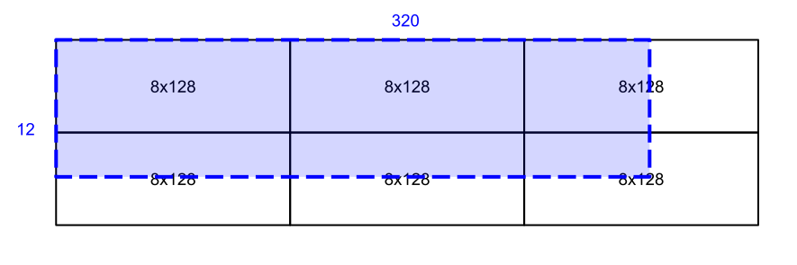

Writing TPU kernels with Pallas#
This page focuses on the details that are important when attempting to run Pallas kernels on Google TPUs. For one, the TPU backend is still in an experimental phase, and only a subset of JAX NumPy will be accepted. Furthermore, writing performant code for TPUs might require thinking carefully about the native capabilities of the hardware. While many patterns that are unnatural to the hardware will be accepted, they might end up requiring software emulation, and can slow down the computation.
Warning
This feature should still be considered experimental as work is still in progress (in particular on improving the error messages).
Note
While all the features described here are experimental, we remain very serious about maintaining their correctness. As such, it might not be uncommon to see a “not implemented” error while attempting to write TPU kernels. But, if a kernel is accepted by the compiler, it must return the expected results.
If you see unexpected outputs, please compare them against a kernel run with
interpret=True passed in to pallas_call. If the results diverge,
please file a bug report.
What is a TPU?#

TPU is a hardware accelerator developed at Google. You can think of TPUs as GPUs, but specialized for machine learning workloads specifically. As such, their architecture differs quite significantly. However, we believe that Pallas can make it easy to start writing TPU kernels, even without having a full understanding of the underlying hardware. Having said that, understanding the hardware well will certainly make it easier to write performant kernels.
In a nutshell, the main difference between TPUs and GPUs is that TPUs are sequential machines with a very wide vector register (kind of like a CPU!). At the same time, they allow the software to schedule certain operations in the background, making them execute asynchronously with respect to the main instruction stream. This includes things like HBM memory accesses (which cannot be issued directly, but instead have to be prefetched to lower levels of the memory hierarchy by the DMA subunits), matrix multiplies (supported by the MXU unit) or matrix transpositions and permutes (supported by the XLU unit).
If you’re interested in learning more about the TPU architecture in detail, we recommend reading a collection of papers published over the years. While many of them talk about specific TPU generations, many of the ideas described transfer to later generations as well.
Noteworthy properties and restrictions#
BlockSpecs and grid iteration#
BlockSpecs (see BlockSpec, a.k.a. how to chunk up inputs) generally behave as expected
in Pallas — every invocation of
the kernel body gets access to slices of the inputs and is meant to initialize a slice
of the output.
Note
- Not all block shapes are supported. On TPU, only blocks with rank at least 1
are supported. Furthermore, the last two dimensions of your block shape must be divisible by 8 and 128 respectively, or be equal to the respective dimensions of the overall array.
One interesting aspect of Pallas TPU kernels is the way they handle memory spaces:
While the inputs to pallas_call will often reside in HBM (the main TPU
memory), the references passed in to the kernel body will point to buffers in
lower levels of memory hierarchy (VMEM or SMEM). This enables the kernel body
to write and read them at very high speeds, while all the communication with
HBM (which has very high latency) is handled by the compiler and overlapped
with compute.
What’s more, compared to GPUs, TPUs are actually highly sequential machines. Ergo, the grid is generally not processed in parallel, but sequentially, in lexicographic order (though see the Multicore TPU configurations section for exceptions). This unlocks some interesting capabilities:
When two (lexicographically) consecutive grid indices use the same slice of an input, the HBM transfer for the second iteration is skipped, as the data is already available.
Multiple invocations of the kernel body can write to the same slice of the output, without any risk of race conditions. However, we do require that all invocations that write to a particular slice are consecutive.
The “consecutive” restriction on the output usually means that some prefix of the grid dimensions always varies the slice of the output an invocation needs to access, while the output window remains constant for the remaining suffix.
For example, when implementing a Pallas TPU kernel for matrix multiplication, one would generally use a 3 dimensional grid: the first two dimensions would correspond to slicing along the first axis of the left operand and the second axis of the second operand. The third and last grid axis would tile the reduction dimension. The grid axis corresponding to the reduction dimension has to be the last one, since the output window does not vary along this axis. The output reference can be then used as an accumulator for partial results.
Note
VMEM is fairly large for such a low-level memory hierarchy (16MB+), making it possible to use large window sizes. And, oftentimes, the larger the window size, the better the eventual hardware utilization will be. However, it is possible to specify a window size that (together with space necessary to hold spilled vector registers) exceeds the size of VMEM. In this case, you will likely see a low-level compiler error message complaining about an out-of-memory error.
Array Layouts#
Dimension ordering of arrays is meaningful in Pallas.
In JAX programs, the ordering of intermediate arrays inside jax.jit usually
has no impact on performance, as the compiler is free to rearrange them.
However, as Pallas is meant to expose lower-level capabilities, the dimension
order can have great impact on the quality of generated code.
TPUs perform the bulk of the computation on 2D vector registers, which are typically of
size 8x128 for 32-bit values (as of TPU v6).
When a vector value is loaded from VMEM into registers (e.g. x = x_ref[...]),
the last two dimensions of the array will be tiled into the registers.
Pallas will only ever consider mapping the last two dimensions of
intermediate arrays to the 8x128 vector register dimensions (sublanes and lanes
respectively).
Here is a graphical example of how a 12x320 array can be tiled using 6 8x128 tiles:
Tiled layouts have several import ramifications for kernel writers:
The last two axes of an array are treated differently than other axes. For example, reductions, reshapes, and transposes are generally more expensive when involving the last two axes. Some reshapes involving the last two dimensions are not supported and will result in a compiler error, but are “free” and performed at compile time for other dimensions.
While sometimes unavoidable, it is generally wasteful to have singleton dimensions in the last two axes, since they will occupy 1 element out of the entire tile dimension. Consuming too many registers can also potentially cause register spills into VMEM which degrades kernel performance.
Related to the above point, all vector computation is padded up to the tile size. Adding a two 1x1 arrays costs as much as adding two 8x128 arrays, and adding two 8x128x1x1 arrays will be 1024 times as expensive as adding two 8x128 arrays, since the 8x128x1x1 array will be padded to 8x128x8x128.
Multicore TPU configurations#
In newer TPU generations, the two cores on a chip are often abstracted as a
single device. To take advantage of multiple cores, Pallas has to break the
sequential grid execution guarantees, and will need to parallelize one of the
grid axes over cores. This is an opt-in procedure. To allow that,
pallas_call requires an extra parameter named dimension_semantics:
pallas_call(
...,
compiler_params=pltpu.CompilerParams(
dimension_semantics=["parallel", "parallel", "arbitrary"]
),
)
That parameter is a list, with as many entries as many axes there are in the
grid. Only parallel dimensions can be partitioned over cores. As a rule of
thumb, the dimensions are parallel, unless the output window does not vary.
As such, dimension_semantics is always a number of parallel axes
followed by a number of arbitrary axes.
While partitioning a kernel over a 2-core TPU device often leads to a 2x speedup, it can be in fact significantly smaller. This is especially true if different instances of the body have highly varying cost. If all of the expensive steps get mapped to one core, but all cheap steps are assigned to the other, the second core will be sitting idle until the first one completes its tasks.
Pallas TPU generally favors partitioning axes of a size that is a multiple of the number of TPU cores, and prefers to partition leading grid axes.
Placing operands in SMEM#
Most of the compute on the TPU will happen on the vector unit. Still, there are many cases where it is useful to perform a number of scalar operations, e.g., to carry out control-flow. For that reason, TPUs come with a separate scalar unit, and a separate scalar memory (SMEM) attached to it. As a rule of thumb, any data used to perform control-flow decisions should be placed in SMEM.
SMEM is a low-latency memory that supports random access, but lets you only read and write 32-bit values with a single instruction (very small compared to the 4KBi granularity of VMEM transactions, but much more flexible due to lack of alignment requirements!).
The scalar memory is also very useful when implementing kernels that do not
access the tiles of inputs in a regular pattern, such as when writing
block-sparse kernels. In Pallas, this can be achieved by replacing the
grid argument to pallas_call with a grid_spec of
PrefetchScalarGridSpec with a non-zero num_scalar_prefetch argument.
If num_scalar_prefetch is n, then the first n arguments to
pallas_call will be placed in SMEM. No BlockSpecs should be specified
for those arguments. But, the BlockSpecs for all subsequent arguments will
receive not only the grid indices, but also the SMEM references to the leading
operands.
See Scalar Prefetch and Block-Sparse Computation for examples on using this feature.
Supported data types#
At the moment Pallas TPU supports the following data types:
jnp.float32jnp.bfloat16jnp.int*(all precisions, except forjnp.int4)jnp.uint*(all precisions)jnp.bool_
Computation placement#
All scalar (i.e. 0D) arrays will be stored in scalar registers, and operations on then will be executed on the scalar core. All other operations (even on single-element, but 1D+ arrays) will be executed on the vector core.
Supported operations#
Matrix multiplication#
Matrix multiplication always produces results in the float32 format.
If your inputs are not float32, we recommend using lax.dot with
preferred_element_type set to jnp.float32.
When using lax.dot_general, it is possible to fuse transpositions of
the last two dimensions of matrix multiplication operands into the operation,
which can improve overall kernel performance.
Precision control#
Pallas TPU lowering is aware of jax.default_matmul_precision. For best
performance (and lowest precision), use bfloat16. If you care about
numerical accuracy, you might want to set the precision to float32.
Warning
Even if you pass in 32-bit operands to a matrix multiplication, they will be
rounded to bfloat16 unless float32 precision is requested.
Transposition#
If the value has at least 4 dimensions, arbitrary transpositions of all but the last two axes are free. Otherwise, only the transposition of the last two axes is implemented. Note that some transpositions of the last two dimensions can be fused into matrix multiplication.
Accessing memory#
Arbitrary slices of references can be read or updated, subject to implementation constraints. Currently, no restrictions are placed on inputs that are 32-bit wide, but only some slicing patterns are supported for narrower types. Reads and writes that are aligned to multiples of, and have a length that is a multiple of 8 and 128 respectively in the last two dimensions are always supported.
Reads and writes to vector memory generally happen on tiles of shape (8, 128).
As such, when reading or writing to references that have at least two dimensions,
the best performance is achieved when the base offset of the memory access
has indices divisible by the tiling, and the size of the read region is a
multiple of the tile size.
Elementwise operations#
Many elementwise operations are supported. It is worth noting that the hardware generally only supports elementwise computation using 32-bit types. When loading operands that use lower-precision types, they should generally be upcast to a 32-bit type before applying elementwise ops.
It is worth noting that they can vary significantly in their cost. As such, we outline three categories of supported operations: cheap (🟢), medium (🌕) and expensive (🔴).
Operation |
Cost |
|---|---|
|
🟢 |
|
🟢 |
|
🟢 |
|
🌕 |
|
🟢 |
|
🟢 |
|
🟢 |
|
🟢 |
|
🟢 |
Comparisons ( |
🟢 |
Type casts ( |
🟢 |
|
🌕 |
|
🌕 |
|
🌕 |
|
🔴 |
|
🔴 |
Many JAX functions are implemented in terms of other JAX primitives, so this
list might not be comprehensive. For example, jax.nn.relu is implemented
in terms of comparisons and jnp.where will work in Pallas kernels too.
Array constructors#
All constant array constructors are supported (jnp.ones, jnp.zeros,
jnp.full).
Reductions#
sum, max, min (for floating point values) reductions are supported, as well
as any and all for boolean values. Integer reductions are not supported.
Reductions over the last array dimension are generally the slowest. Reductions over the second last dimension are faster, but still slower than over the leading dimensions.
Broadcasting#
The performance characteristics of broadcasting are very similar to those of reductions. Broadcasting along all but the two trailing dimensions is always supported and free. Broadcasting along the second to last dimension is slower, while broadcasting along the last dimension is the slowest.
Reshapes#
As usual, reshapes in all dimensions but the last two dimensions are supported and free.
The only two supported cases when a reshape can modify the last two dimensions of an array is when (1) some leading dimensions are flattened onto the second to last dimension, or (2) it adds a dimension that was just removed by a reduction.
Random Number Generation#
Pallas supports the most commonly used functions from the jax.random module,
such as uniform, normal, and bernoulli. The key should be a threefry2x32 key,
which is the default setting in JAX. Keys can be directly passed into a kernel,
or generated inside of a kernel.
Control flow#
The TPU backend features limited support for control flow at the moment. The
currently supported functions are cond, fori_loop and for_loop.
However, loop primitives get fully unrolled during the compilation at the
moment, so try to keep the loop trip count reasonably small.
Overusing control flow can lead to significant regressions in low-level code generation, and it is recommended to try to squeeze as many computationally expensive operations into a single basic block as possible.